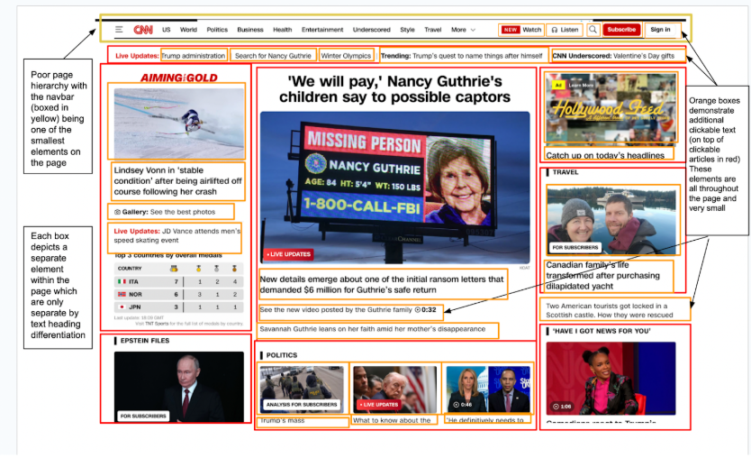
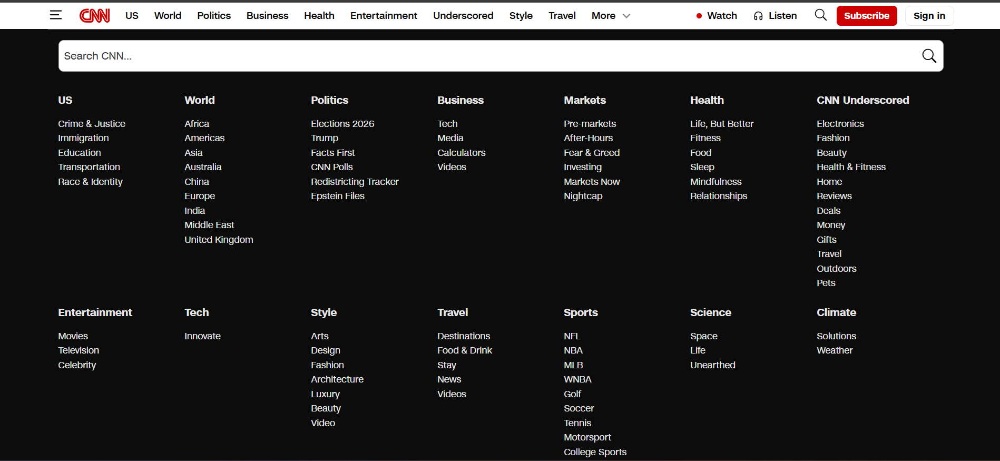
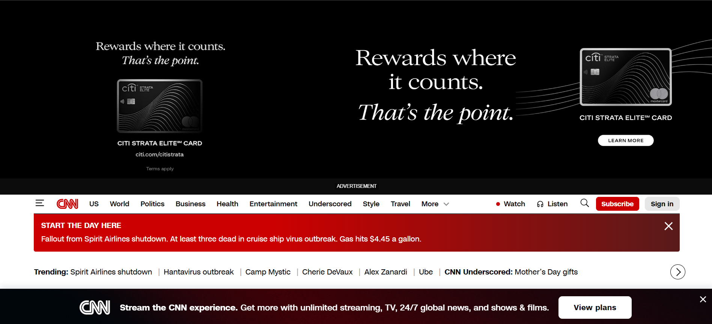

Interaction Design Project: CNN Redesign

The website for the Inteaction Design Project that me and my teammates opted to remake was that of CNN.
Problem/Reasoning
The reason why me and my other teammates settled on CNN of all sites to reiterate and streamline was thanks to how the cluttered and lacking of proper hierachy the site was.

In the image above you can see just how true my previous statement holds as articles stack upon another leaving a cluttered and overwhelming looking website off solely the homepage alone. However, it's not just visually where the site was lacking but as well it was lacking within it's usability. Navigation on the site can be inconsistent as it constantly switches the header and it's options present that would leave the user having to recall what page goes where over being able to recognize where solely off what was present on the page. There was also a problem with ads obscuring the site in such a way that hindered user navigation and as well the overabundance categories within the footer.

